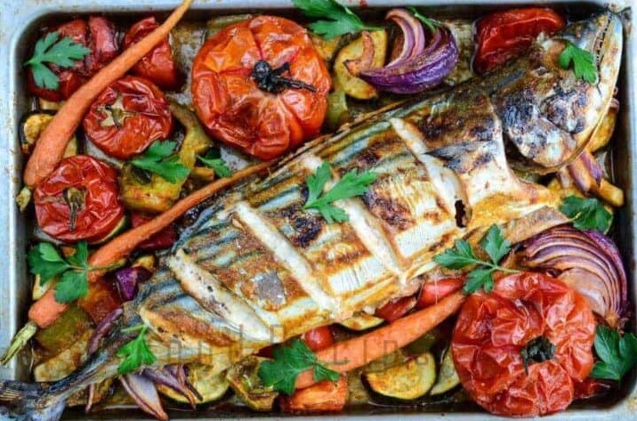
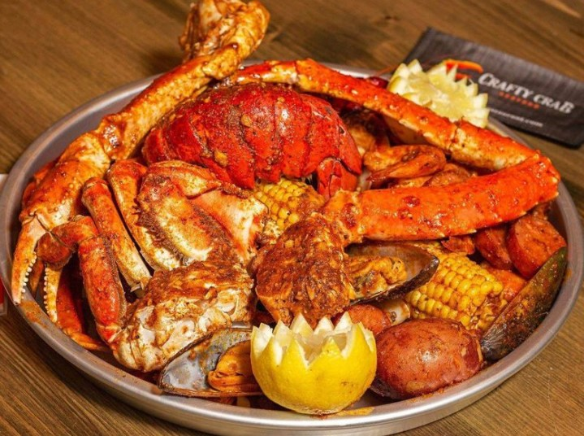
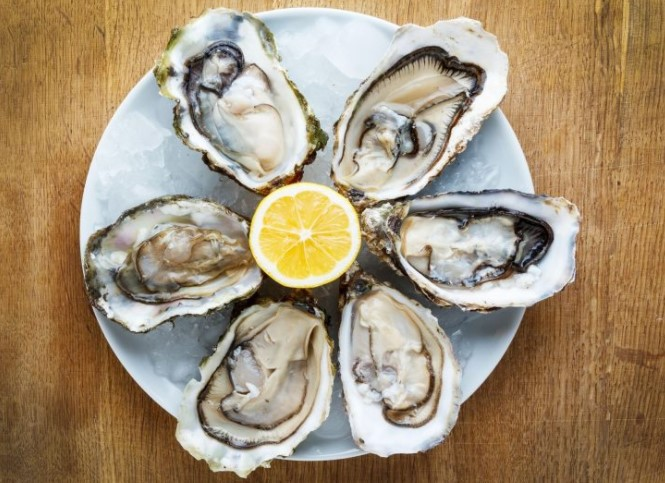

Welcome to Haystack Fish! We are a initiative new concept restaurant. We operate on the ghost kitchen model. We have no physical locations, just enter in your address, choose your order, pay and we will deliver. We support all of PNW and are based out of Cannon Beach. Bellow you will find our menue.
About Us:
Menue
Fried Fish $8.99

Fish Tray $19.99
Lobster Tray $14.99
Oyster Tray $12.99
